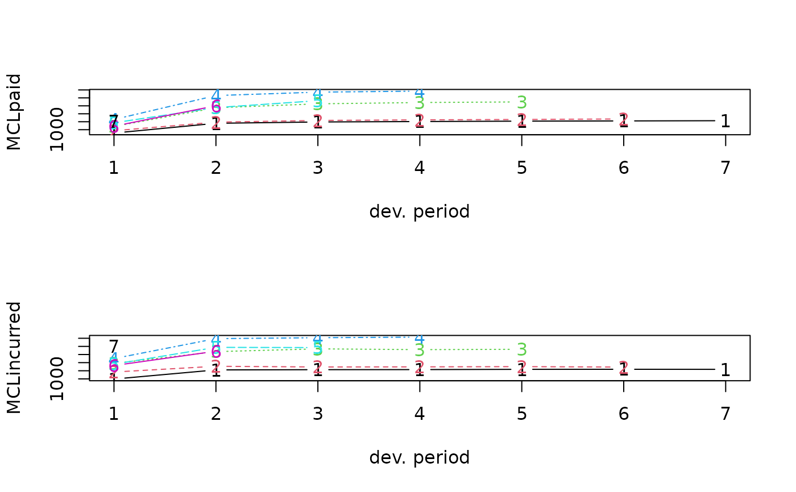

Run off triangles of accumulated paid and incurred claims data.
MCLpaid.RdRun-off triangles based on a fire portfolio
Examples
MCLpaid
#> dev
#> origin 1 2 3 4 5 6 7
#> 1 576 1804 1970 2024 2074 2102 2131
#> 2 866 1948 2162 2232 2284 2348 NA
#> 3 1412 3758 4252 4416 4494 NA NA
#> 4 2286 5292 5724 5850 NA NA NA
#> 5 1868 3778 4648 NA NA NA NA
#> 6 1442 4010 NA NA NA NA NA
#> 7 2044 NA NA NA NA NA NA
MCLincurred
#> dev
#> origin 1 2 3 4 5 6 7
#> 1 978 2104 2134 2144 2174 2182 2174
#> 2 1844 2552 2466 2480 2508 2454 NA
#> 3 2904 4354 4698 4600 4644 NA NA
#> 4 3502 5958 6070 6142 NA NA NA
#> 5 2812 4882 4852 NA NA NA NA
#> 6 2642 4406 NA NA NA NA NA
#> 7 5022 NA NA NA NA NA NA
op=par(mfrow=c(2,1))
plot(MCLpaid)
plot(MCLincurred)

par(op)